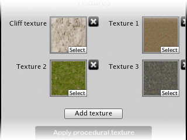

1. Selecting textures
The textures used by the procedural terrain texturing tool can be added, deleted or changed both using the interface provided in the Texture panel, or as normally done in the Terrain component in the Terrain/Paint Texture panel.
Click the 'Add Texture' button to add more textures (maximum of six). To assign a texture, drag a texture image from the 'Project' folder onto one of the texture icons. To delete a texture, click the delete ('x') button next to it.
The procedural terrain texturing tool supports a total of six textures - one 'cliff' texture which is applied to steep areas, and five further textures which are applied to terrain at different heights.

Selecting terrain textures in the inspector.